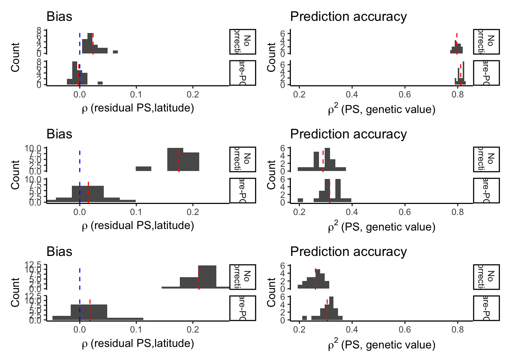

Last updated: 2020-12-22
Checks: 6 1
Knit directory: popstruct_scripts/
This reproducible R Markdown analysis was created with workflowr (version 1.6.2). The Checks tab describes the reproducibility checks that were applied when the results were created. The Past versions tab lists the development history.
The R Markdown is untracked by Git. To know which version of the R Markdown file created these results, you’ll want to first commit it to the Git repo. If you’re still working on the analysis, you can ignore this warning. When you’re finished, you can run wflow_publish to commit the R Markdown file and build the HTML.
Great job! The global environment was empty. Objects defined in the global environment can affect the analysis in your R Markdown file in unknown ways. For reproduciblity it’s best to always run the code in an empty environment.
The command set.seed(20201202) was run prior to running the code in the R Markdown file. Setting a seed ensures that any results that rely on randomness, e.g. subsampling or permutations, are reproducible.
Great job! Recording the operating system, R version, and package versions is critical for reproducibility.
Nice! There were no cached chunks for this analysis, so you can be confident that you successfully produced the results during this run.
Great job! Using relative paths to the files within your workflowr project makes it easier to run your code on other machines.
Great! You are using Git for version control. Tracking code development and connecting the code version to the results is critical for reproducibility.
The results in this page were generated with repository version 99813ec. See the Past versions tab to see a history of the changes made to the R Markdown and HTML files.
Note that you need to be careful to ensure that all relevant files for the analysis have been committed to Git prior to generating the results (you can use wflow_publish or wflow_git_commit). workflowr only checks the R Markdown file, but you know if there are other scripts or data files that it depends on. Below is the status of the Git repository when the results were generated:
Ignored files:
Ignored: .DS_Store
Ignored: .Rproj.user/
Ignored: Archived/
Ignored: analysis/.DS_Store
Ignored: burden_msprime/.DS_Store
Ignored: burden_msprime/generate_burden/.DS_Store
Ignored: data/.DS_Store
Ignored: data/burden_msprime/
Ignored: data/burden_msprime2/
Ignored: data/gwas/
Ignored: data/ukmap/
Ignored: gwas/.DS_Store
Ignored: gwas/grid/.DS_Store
Ignored: gwas/grid/tau-9/.DS_Store
Ignored: gwas/grid/tau-9/scripts/.DS_Store
Ignored: gwas/grid/tau-9/scripts/generate_genotypes/.DS_Store
Ignored: gwas/grid/tau-9/scripts/gwas/.DS_Store
Ignored: gwas/grid/tau100/.DS_Store
Ignored: gwas/grid/tau100/scripts/.DS_Store
Ignored: gwas/grid/tau100/scripts/generate_genotypes/.DS_Store
Ignored: gwas/grid/tau100/scripts/gwas/.DS_Store
Ignored: gwas/ukb/.DS_Store
Ignored: gwas/ukb/scripts/.DS_Store
Ignored: optimize_migration_rate/.DS_Store
Ignored: optimize_migration_rate/complex_dem/.DS_Store
Ignored: optimize_migration_rate/grid/.DS_Store
Ignored: output/plots/
Ignored: pca_plots/.DS_Store
Ignored: prs/.DS_Store
Ignored: prs/grid/.DS_Store
Ignored: qqplots/.DS_Store
Ignored: qqplots/fixed_effects/.DS_Store
Ignored: qqplots/lmms/.DS_Store
Ignored: revisions/.DS_Store
Ignored: shared_scripts/gwas/
Ignored: shared_scripts/prs/
Ignored: shared_scripts/simphenotype/
Ignored: sib_analysis/.DS_Store
Ignored: sib_analysis/complex_dem/.DS_Store
Ignored: sib_analysis/grid/.DS_Store
Ignored: sib_analysis/grid/tau100/mates/
Ignored: simulating_genotypes/.DS_Store
Ignored: simulating_genotypes/grid/.DS_Store
Ignored: simulating_phenotypes/.DS_Store
Untracked files:
Untracked: analysis/biasvaccuracy_prsascertainment.Rmd
Untracked: analysis/biasvaccuracy_prsascertainment.nb.html
Untracked: analysis/plotting_prs_sib_effects.Rmd
Untracked: analysis/plotting_prs_sib_effects.nb.html
Untracked: analysis/plottingprs_distribution_gridt.Rmd
Untracked: analysis/plottingprs_distribution_gridt.nb.html
Untracked: analysis/plt_burden_association.Rmd
Untracked: analysis/plt_ukb_unrelated_prs.Rmd
Untracked: analysis/plt_ukb_unrelated_prs.nb.html
Untracked: analysis/prs_wt_finemapping.Rmd
Untracked: analysis/prs_wt_finemapping.nb.html
Unstaged changes:
Modified: analysis/_site.yml
Modified: analysis/index.Rmd
Modified: burden_msprime/plt_burden_association_t100.Rmd
Modified: burden_msprime/plt_burden_association_t100.nb.html
Deleted: revisions/figuring_out_prediction_accuracy.Rmd
Deleted: revisions/figuring_out_prediction_accuracy.nb.html
Deleted: revisions/figuring_out_prediction_accuracy2.Rmd
Deleted: revisions/figuring_out_prediction_accuracy2.nb.html
Note that any generated files, e.g. HTML, png, CSS, etc., are not included in this status report because it is ok for generated content to have uncommitted changes.
There are no past versions. Publish this analysis with wflow_publish() to start tracking its development.
One of the reviewers was interested in seeing if fine-mapping (with Susie) performed better than our clumping and thresholding in terms of bias and prediction accuracy in the polygenic score. We test this idea here.
Briefly, I ran susie’s algorithm with for every 100kb window individually to identify the variant with the highest posterior inclusion probability. We set a value for L=1 because we know that there’s only one causal variant in each window. We used the original effect size (as opposed to that re-estimated by susie) to construct the polygenic scores.
Let’s load necessary libraries.
library(ggplot2)
library(data.table)
library(dplyr)
Attaching package: 'dplyr'The following objects are masked from 'package:data.table':
between, first, lastThe following objects are masked from 'package:stats':
filter, lagThe following objects are masked from 'package:base':
intersect, setdiff, setequal, unionlibrary(rprojroot)
library(patchwork)
F = is_rstudio_project$make_fix_file()
options(dplyr.summarise.inform=FALSE) Read the polygenic scores constructed using effect sizes of variants called by susie using summary statistics from GWAS with no correction and using rare-PCA to correct for population structure. Also, load the (true) genetic values for each individual and their longitude and latitude information.
#no correction
prs.pcs0 = fread(F("data/gwas/grid/genotypes/tau100/ss500/test/susie_prs/prs_susie_smooth.all.pcs0.sscore"))
#rare-PCA
prs.re = fread(F("data/gwas/grid/genotypes/tau100/ss500/test/susie_prs/prs_susie_smooth.all.re.sscore"))
colnames(prs.pcs0) = colnames(prs.re)=c("rep","IID","lead","marginal")
#remove betas marginal over the windows
#we estimated these but they don't really work because it requires knowledge of the phase of the variants etc. which we have but complicated to do.
#I've observed in many cases that the effects are very similar
prs.pcs0 = prs.pcs0 %>% select(rep,IID,lead)
prs.re = prs.re %>% select(rep,IID,lead)
#load genetic values
gvalues = fread(F("data/gwas/grid/genotypes/tau100/ss500/test/gvalue/genos_grid_d36_m0.05_s500_t100.rmdup.test.all.gvalue.sscore.gz"))
colnames(gvalues) = c("rep","IID","dosage","gvalue")
#load pop file (lat and long information)
pop = fread(F("data/gwas/grid/genotypes/tau100/ss500/iid_test.txt"))
prs.pcs0$correction="pcs0"
prs.re$correction="re"
prs.susie= rbind(prs.pcs0,prs.re)
prs.susie = merge(prs.susie, pop)
prs.susie = merge(prs.susie, gvalues, by = c("IID","rep"))
prs.susie.summary = prs.susie%>%
group_by(correction,rep)%>%
summarize(rlat = cor(lead,latitude),
r2 = cor(lead,gvalue)^2)
prs.susie.summary = prs.susie %>%
mutate(lead.adjusted = lead - gvalue) %>%
group_by(correction,rep) %>%
summarize(rlat = cor(lead.adjusted,latitude),
r2 = cor(lead,gvalue)^2)
prs.susie.summary.mean = prs.susie.summary %>%
group_by(correction) %>%
summarize(mean.rlat = mean(rlat),
mean.r2 = mean(r2))Now let’s add the plot of when lead SNPs are used (our original strategy).
prs.lead = fread(F("data/gwas/grid/genotypes/tau100/ss500/test/prs/gridt100_prs_smooth.all.nc.sscore.gz"))
colnames(prs.lead) = c("rep","IID","dosage","pcs0","cm","re","cmre")
prs.lead = merge(prs.lead, gvalues, by = c("rep","IID"))
prs.lead = merge(prs.lead, pop, by =c("IID"))
prs.lead = prs.lead %>% select(rep,IID,pcs0,re,gvalue,latitude)
mprs.lead = reshape2::melt(prs.lead, id.vars = c("rep","IID","gvalue","latitude"),
value.name = "prs",
variable.name = "correction")
mprs.lead.summary = mprs.lead %>%
mutate(prs.adjusted = prs - gvalue) %>%
group_by(rep,correction) %>%
summarise(rlat = cor(prs.adjusted,latitude),
r2 = cor(prs,gvalue)^2)
#caculate mean for each distribution
mprs.summary.lead.mean = mprs.lead.summary %>%
group_by(correction)%>%
summarize(mean.rlat = mean(rlat),
mean.r2 = mean(r2))
mprs.lead.summary = mprs.lead.summary %>%
select(rep,correction,rlat,r2)For comparison, let’s also load PRS calculated with known causal variants.
prs.causal.p = fread(F("data/gwas/grid/genotypes/tau100/ss500/test/prs/gridt100_prs_smooth.all.c.p.sscore.gz"))
colnames(prs.causal.p) = c("rep","IID","dosage","pcs0","cm","re","cmre")
prs.causal.p = merge(prs.causal.p, gvalues, by = c("rep","IID"))
prs.causal.p = merge(prs.causal.p, pop, by =c("IID"))
prs.causal.p = prs.causal.p %>% select(rep,IID,pcs0,re,gvalue,latitude)
mprs.causal.p = reshape2::melt(prs.causal.p, id.vars = c("rep","IID","gvalue","latitude"),
value.name = "prs",
variable.name = "correction")
mprs.causal.p.summary = mprs.causal.p %>%
mutate(prs.adjusted = prs - gvalue) %>%
group_by(rep,correction) %>%
summarise(rlat = cor(prs.adjusted,latitude),
r2 = cor(prs,gvalue)^2)
#caculate mean for each distribution
mprs.summary.causal.p.mean = mprs.causal.p.summary %>%
group_by(correction)%>%
summarize(mean.rlat = mean(rlat),
mean.r2 = mean(r2))
mprs.causal.p.summary = mprs.causal.p.summary %>%
select(rep,correction,rlat,r2)Concatenate altogether and make plots. For this, we need to get all x axes to be on the same scale.
prs.summary = rbind(prs.susie.summary, mprs.lead.summary, mprs.causal.p.summary)
#figure out the max range of axes so that all plots are on the same scale
xrange.rlat = range(prs.summary$rlat)
xrange.r2 = range(prs.summary$r2)Plot each component and combine into single plot
plt.susie.bias = ggplot(prs.susie.summary)+
geom_histogram(aes(rlat),bins=10)+
facet_grid(correction~., labeller = as_labeller(
c(pcs0 = "No \n correction",
re = "Rare-PCA")
))+
theme_classic()+
labs(x = bquote(rho~"(residual PS,latitude)"),
y = "Count",
title = "Bias")+
geom_vline(xintercept = 0, color="blue", linetype = "dashed")+
geom_vline(data = prs.susie.summary.mean,
aes(xintercept = mean.rlat),
linetype = "dashed",
color = "red")+
coord_cartesian(xlim = xrange.rlat)
plt.susie.r2 = ggplot(prs.susie.summary)+
geom_histogram(aes(r2),bins=10)+
facet_grid(correction~.,
labeller = as_labeller(
c(pcs0 = "No \n correction",
re = "Rare-PCA")
))+
theme_classic()+
labs(x = bquote(rho^2~"(PS, genetic value)"),
y = "Count",
title = "Prediction accuracy")+
geom_vline(data = prs.susie.summary.mean,
aes(xintercept = mean.r2),
color = "red",
linetype = "dashed")+
coord_cartesian(xlim = xrange.r2)
plt.susie = plt.susie.bias + plt.susie.r2
plt.lead.bias = ggplot(mprs.lead.summary)+
geom_histogram(aes(rlat),bins=10)+
facet_grid(correction~., labeller = as_labeller(
c(pcs0 = "No \n correction",
re = "Rare-PCA")
))+
theme_classic()+
labs(x = bquote(rho~"(residual PS,latitude)"),
y = "Count",
title = "Bias")+
coord_cartesian(xlim = xrange.rlat)+
geom_vline(xintercept = 0, color="blue", linetype = "dashed")+
geom_vline(data = mprs.summary.lead.mean,
aes(xintercept = mean.rlat),
linetype = "dashed",
color = "red")
plt.lead.r2 = ggplot(mprs.lead.summary)+
geom_histogram(aes(r2),bins=10)+
facet_grid(correction ~.,
labeller = as_labeller(
c(pcs0 = "No \n correction",
re = "Rare-PCA")
))+
theme_classic()+
labs(x = bquote(rho^2~"(PS, genetic value)"),
y = "Count",
title = "Prediction accuracy")+
coord_cartesian(xlim = xrange.r2)+
geom_vline(data = mprs.summary.lead.mean,
aes(xintercept = mean.r2),
linetype = "dashed",
color = "red")
plt.lead = plt.lead.bias + plt.lead.r2
plt.causal.p.bias = ggplot(mprs.causal.p.summary)+
geom_histogram(aes(rlat),bins=10)+
facet_grid(correction~., labeller = as_labeller(
c(pcs0 = "No \n correction",
re = "Rare-PCA")
))+
theme_classic()+
labs(x = bquote(rho~"(residual PS,latitude)"),
y = "Count",
title = "Bias")+
coord_cartesian(xlim = xrange.rlat)+
geom_vline(xintercept = 0, color="blue", linetype = "dashed")+
geom_vline(data = mprs.summary.causal.p.mean,
aes(xintercept = mean.rlat),
linetype = "dashed",
color = "red")
plt.causal.p.r2 = ggplot(mprs.causal.p.summary)+
geom_histogram(aes(r2),bins=10)+
facet_grid(correction ~.,
labeller = as_labeller(
c(pcs0 = "No \n correction",
re = "Rare-PCA")
))+
theme_classic()+
labs(x = bquote(rho^2~"(PS, genetic value)"),
y = "Count",
title = "Prediction accuracy")+
coord_cartesian(xlim = xrange.r2)+
geom_vline(data = mprs.summary.causal.p.mean,
aes(xintercept = mean.r2),
linetype = "dashed",
color = "red")
plt.causal.p = plt.causal.p.bias + plt.causal.p.r2
plt.all = plt.causal.p / plt.lead / plt.susie
plt.all
sessionInfo()R version 4.0.3 (2020-10-10)
Platform: x86_64-apple-darwin17.0 (64-bit)
Running under: macOS Catalina 10.15.7
Matrix products: default
BLAS: /Library/Frameworks/R.framework/Versions/4.0/Resources/lib/libRblas.dylib
LAPACK: /Library/Frameworks/R.framework/Versions/4.0/Resources/lib/libRlapack.dylib
locale:
[1] en_US.UTF-8/en_US.UTF-8/en_US.UTF-8/C/en_US.UTF-8/en_US.UTF-8
attached base packages:
[1] stats graphics grDevices utils datasets methods base
other attached packages:
[1] patchwork_1.0.1 rprojroot_1.3-2 dplyr_1.0.2 data.table_1.13.2
[5] ggplot2_3.3.2 workflowr_1.6.2
loaded via a namespace (and not attached):
[1] Rcpp_1.0.5 plyr_1.8.6 pillar_1.4.6 compiler_4.0.3
[5] later_1.1.0.1 git2r_0.27.1 R.methodsS3_1.8.1 R.utils_2.10.1
[9] tools_4.0.3 digest_0.6.27 evaluate_0.14 lifecycle_0.2.0
[13] tibble_3.0.4 gtable_0.3.0 pkgconfig_2.0.3 rlang_0.4.8
[17] rstudioapi_0.11 yaml_2.2.1 xfun_0.19 withr_2.3.0
[21] stringr_1.4.0 knitr_1.30 generics_0.1.0 fs_1.5.0
[25] vctrs_0.3.4 grid_4.0.3 tidyselect_1.1.0 glue_1.4.2
[29] R6_2.5.0 rmarkdown_2.5 farver_2.0.3 reshape2_1.4.4
[33] purrr_0.3.4 magrittr_1.5 backports_1.1.10 scales_1.1.1
[37] promises_1.1.1 ellipsis_0.3.1 htmltools_0.5.0 colorspace_1.4-1
[41] httpuv_1.5.4 labeling_0.4.2 stringi_1.5.3 munsell_0.5.0
[45] crayon_1.3.4 R.oo_1.24.0